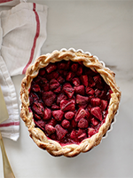

Tarte aux fraises maison
Ingrédients :
- • 2 abaisses de pâte brisée
- • 1/4 de tasse de fécule de maïs
- • 1/2 tasse de sucre
- • 6 tasses de fraises entières, équeutées
Pour la pâte
- • 1 c. à soupe de zeste de citron
- • Quelques feuilles de basilic frais, hachées finement
- • Les graines d'une demi-gousse de vanille
- • Une grosse pincée de poivre noir ou rose
Pour la saveur
Étapes
- • Préchauffer le four à 450 °F.
- • Sur un plan de travail fariné, abaisser une première abaisse de pâte, puis foncer • Dans un bol, combiner la fécule de maïs et le sucre, puis ajouter les fraises et la saveur de votre choix (optionnel, car c'est délicieux même sans ajout de saveur).
- • Verser la garniture au fond du moule à tarte, puis réserver au réfrigérateur.
- • Sur un plan de travail fariné, abaisser la seconde abaisse, puis recouvrir la tarte.
- • Enfourner pendant 15 minutes.
- • Baisser la température du four à 350 °F, puis enfourner à nouveau pendant 30 minutes.
- • Laisser refroidir complètement afin de permettre au liquide de figer, puis servir.